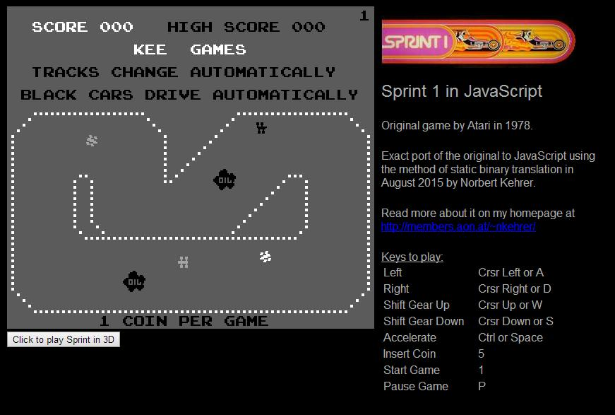
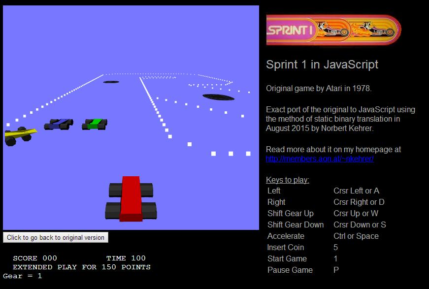

The JavaScript code was automatically translated from the original game's program code. A Prolog program generates semantically equivalent JavaScript code for each 6502 instruction and applies some optimization techniques to the generated program (e.g., removal of redundant flag calculations). The outcome is an exact simulation of the original arcade game. The graphics interface and the emulation of the Sprint video hardware were directly coded in JavaScript and rely on HTML5 and the Canvas element.
The video hardware of the old arcade machine was only capable of showing very simple 2D character-based playfield graphics with four moving objects (sprites). Today's car-driving games normally have 3D graphics, so I thought it would be nice to have a 3D interface also for Sprint. I wrote an alternative video hardware simulator for Sprint, where the same video RAM and sprite hardware registers, which the original Sprint video circuitry shows as simple 2D character graphics, are interpreted as coordinates and objects in three-dimensional space. The orignal game, in which you take a bird's eye view of the race track, becomes a 3D game seen from the first-person perspective of the driver's seat. But keep in mind, that it is still the completely same game logic and the same program from 1976 running, just graphically interpreted differently!
My 3D modelling and programming skills (and also my computer's graphics card speed) are quite limited, so my 3D version is very simple and still suffers from - what I think are - bugs in the (apart from that, really great) Three.js JavaScript 3D library. So, please consider this just a proof of concept.
Now, click here to try Sprint directly in your browser.. It is an arcade game, so don't forget to insert coins first by pressing the "5" key, and then start it with the "1" key.
Here are example screenshots for the original and the 3D version:

